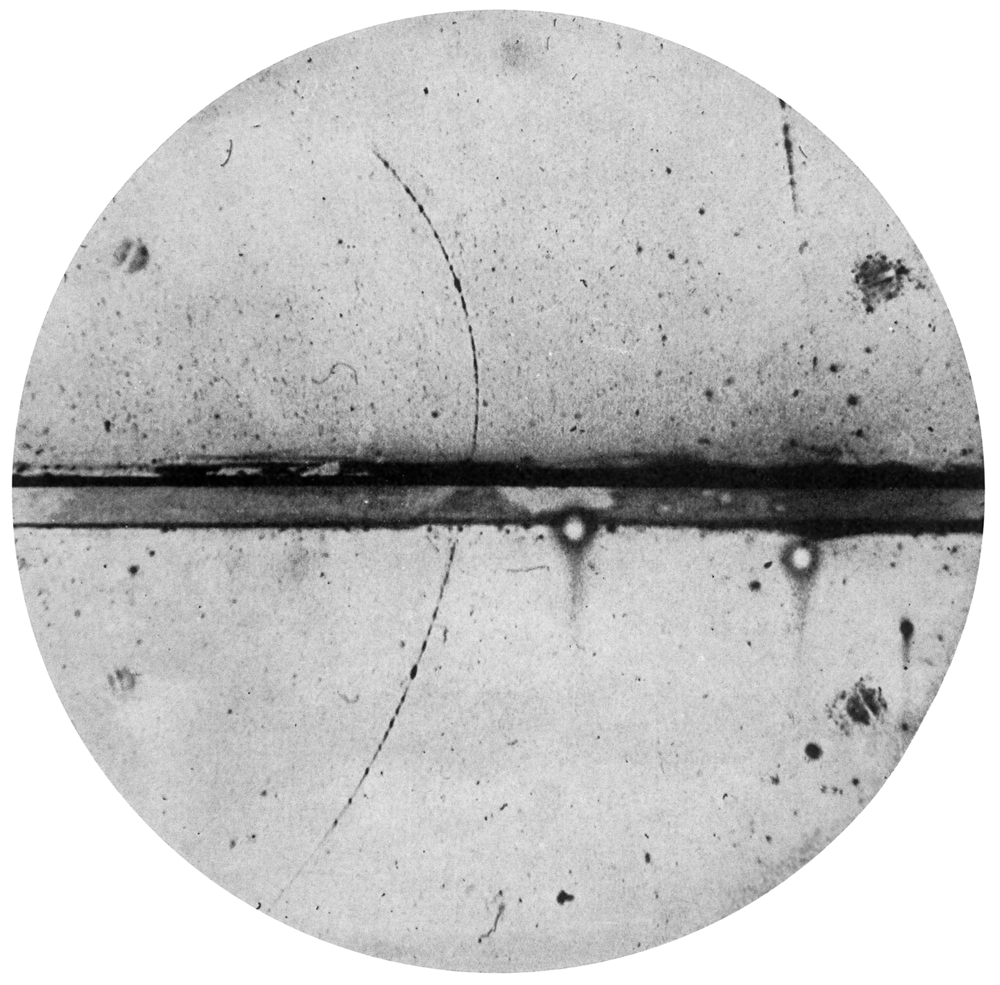
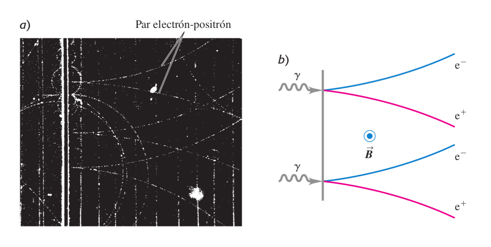
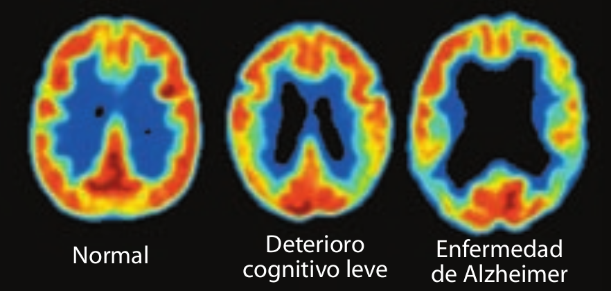
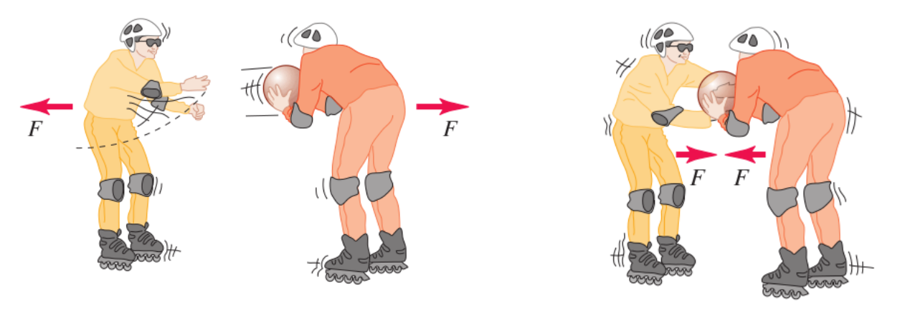
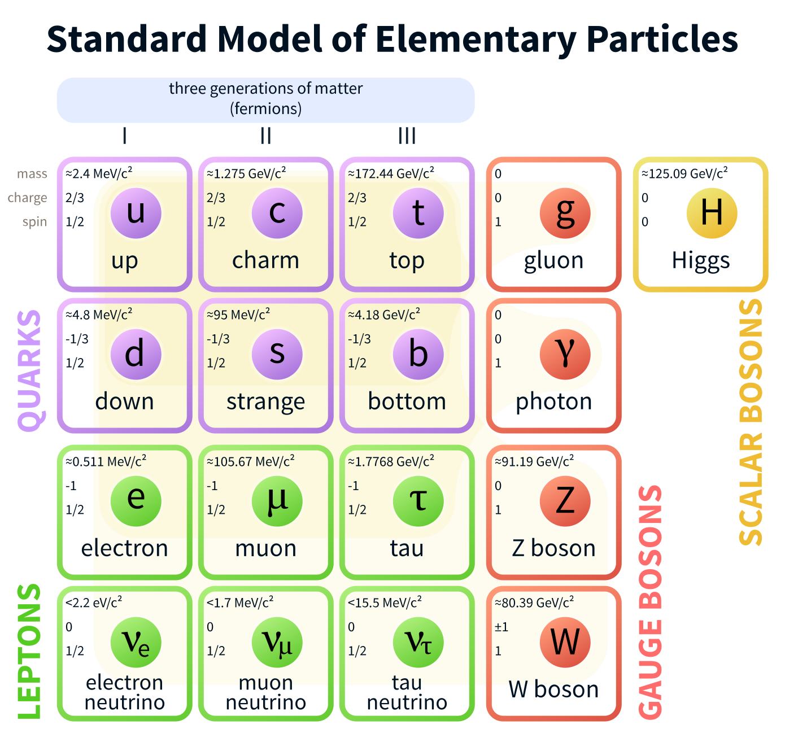
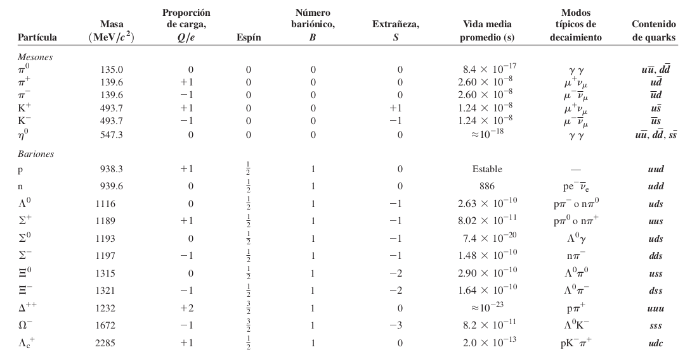
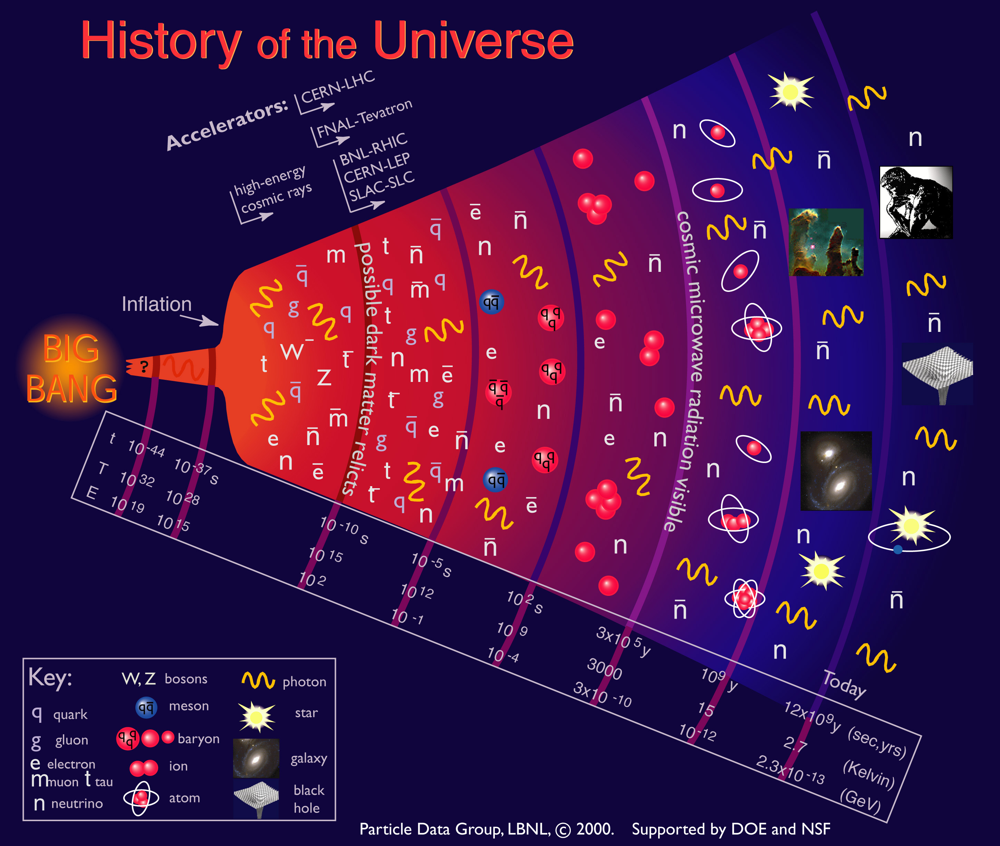

El món del més petit i del més gran
El positró
- Descubriment: Carl Anderson 1932
- Antipartícula de l'electró

creació electró-positró

Tomografia per emissió de positrons (PET)
El pacient rep un compost de glucosa anomenat FDG on l'oxígen és reemplaçat
per $\,^{18} F$ radioactiu que té un decaiment $\beta^+$

Partícules com mediadores de força
El fotó és la partícula mediadora de la interacció electromagnètica

Fotons virtuals: $\Delta E \,\, \Delta t \geq \frac{h}{4\pi}$
Quina és la partícula mediadora de la força nuclear?
- 1935 Hideki Yukawa proposa el mesó ($\sim 250 m_e$)
- 1936 Anderson & Neddmeyer descobreixen els muons estudiant la
radiació cósmica ($207 m_e$)
- 1947 descobriment dels mesons $\pi$ o pions ($270 m_e$)
- ... a partir d'aquí comença un allau de descobriments de noves partícules
- a la dècada dels 60 el panorama era caòtic...
Les quatre interaccions de la natura
- Interacció forta ($1$)
- Interacció electromagnètica ($10^{-2}$)
- Interacció dèbil ($10^{-9}$)
- Interacció gravitatòria ($10^{-36}$)
Model Estàndard de Física de partícules

Alguns hadrons i les seves propietats

L'univers en expansió
